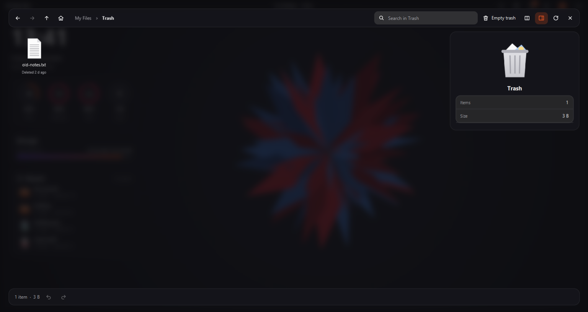

Working with files
Copy, cut and paste#
Select the items, press Ctrl+C (copy) or Ctrl+X (cut), go to the destination and press Ctrl+V. The clipboard is the system's: you can copy in FileExp and paste in another file manager, and the other way round.
FileExp never overwrites a file by surprise. If the name already exists, the new item gets a free name such as report - Copy.pdf or photo (2).jpg.
Large copies go through the transfers panel with progress, speed, time left and Cancel.
New folder and new document#
New › Folder (Ctrl+Shift+N) or New › Text document. The new item is selected with its name ready to edit.
Rename#
Select one item and press F2. Changing only upper and lower case ("photo.jpg" → "Photo.JPG") also works on Windows.
FileExp checks the name before renaming: empty names, characters such as \ / : * ? " < > | on Windows, names ending with a dot or space, and reserved names (CON, NUL…) are refused with a clear message.
Rename many items at once#
Select several items and press F2.

| Option | Example |
|---|---|
| Template | Holiday {n} → Holiday 1, Holiday 2… (Holiday 01, Holiday 02… with 10 or more items) · {date} {name} → 2026-11-17 report |
| Find and replace | Plain text or a regular expression, with or without matching case |
| Prefix and suffix | Text added before or after the name |
| Letters | Keep letters, lowercase, UPPERCASE or Title Case |
| Include the extension | Off by default, so .jpg stays .jpg |
{name} is the current name, {n} a number, padded with zeros to the width of the largest one (the first number is chosen next to the template) and {date} the date the file was modified.
The preview updates as you type and shows conflicts in red (repeated name, already exists, invalid). The rename is all or nothing: if one name fails, the ones already renamed are put back. Swaps such as "a" → "b" and "b" → "a" work.
Delete#
| Action | Shortcut | Result |
|---|---|---|
| Move to Trash | Delete | The item goes to the FileExp Trash and can be restored or undone. |
| Delete permanently | Shift+Delete | Removed for good, after a confirmation. |
The Trash of FileExp works the same on Windows, Linux and macOS. Open it from the top bar or from My Files to restore items to where they were, delete forever or empty the Trash.

You can ask FileExp not to confirm before moving to the Trash in Settings › Files.
Undo and redo#
Ctrl+Z undoes and Ctrl+Y (or Ctrl+Shift+Z) redoes. The status bar and the menu of the folder background show the name of the operation, for example "Undo: Rename 6 items".
Undo covers: rename (also many at once), move to Trash, paste, move, Send to, new folder, new document, compress, extract, moving to the other panel and the moves made by automations. The last 50 operations are kept.
An undo never deletes anything for good. What has to disappear (a copy, a new folder) goes to the Trash, and a redo brings it back.
Compress and extract#
- Compress (action bar or right-click) creates a ZIP of the selection.
- Extract here and Extract to… on a ZIP. A ZIP with a single folder inside is extracted without creating "Folder/Folder".
- Extraction is protected against zip slip: a ZIP cannot write outside the chosen folder.
Send to#
Right-click › Send to lists:
- the system folders and Choose a folder…;
- external devices (USB drives, memory cards, external disks);
- the cloud: synced folders (OneDrive, Google Drive, Dropbox…) and connected WebDAV accounts;
- Computers nearby, when Share nearby is on.
Download from the internet#
New › Download from the internet… asks for an address and downloads the file into the current folder through the transfers panel.
Favourites#
Right-click › Add to Favorites (or the star in the action bar). Favourites appear first in the Overview.